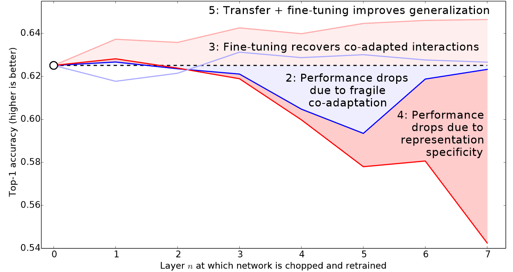

Image Classification
- Since we now familiar the whole process of creating deep learning model, using pre-built model, building them from scratch, handling data, and putting these model into web apps, we will now to go deeper and keep focus on details that make model accurate and reliable.
- It takes many tweaks and parameters changing in order to “polish” a model.
- In order to achieve this goal we need to be familiar with many concepts and technics, different types of layers, regularization methods, optimizers, how to put layers together into architectures, labeling techniques, and much more.
From Dogs and Cats to Pet Breeds
In real world scenarios, the first thing we do is we get in contact with data, usualy at this phase we know nothing about the dataset. We then start to look how to extract the data we want from it, and what the data looks like, and how it is structured.
Usually data is provided in one of two ways:
- Individual files representing items of data, possibly organized into folder or with filenames representing information about those items
- text documents
- images
- text documents
- A table of data in which each row is an item and may include filenames providing connections between the data in the table and data in other formats
- CSV files
- CSV files
- Individual files representing items of data, possibly organized into folder or with filenames representing information about those items
Exceptions:
- Domains like Genomics
- binary database formats
- network streams
- Domains like Genomics
- As we notice here, the data is provided with 2 directories:
imagesannotations
- When we took a look at these names, we see some paterns: we already know from
chapter1that cats name are uppercase, here we see that after the breed’s name there is a(_)then a number, and finally the extension. - This may help us to write some code that extract the breed from a single
Path.
- The best way to work with strings and extract patterns from them is to use
Regex, which stands for Regular Expression.
- Now we need to label the whole dataset using this code.
- Fastai comes with many classes for labeling, in this case when we need to label with help of
regexwe could useRegexLabellerclass withinDataBlaockAPI.
Presizing
- Fastai has this method of presizing the images in a way that conserve its quality after the data augmentation, so it helps the model to learn more lessons from data, and also it helps our dataset to be more varies
- The idea behind the
presizingis we crop the image and resize it to 460 by 460 first, which is a big size by deep learning norms, this operation is done on CPU, then we do the data augmentation in batches, by cropping a rotated random part of that 460^2 image, and taking the cropped image then resize again to a 224 by 224 image, all this operation are done on batch level, which mean on GPU.**
item_tfms=Resize(460),
batch_tfms=aug_transforms(size=224, min_scale=0.75))

* Usually all the augmentation operations we do on a image reduce the quality of the image, but with this approach we could say we can preserve big part of informations of that image so the model can learn better
### Checking and Debugging a DataBlock
* `DataBlock` is just a blueprint for orginizing data before we feed it to the model, you have no guarantee that your template is going to work on your data source as you intend.
* So, before training a model you should always check your data. You can do this using the show_batch method:
::: {#cell-23 .cell quarto-private-1='{"key":"colab","value":{"base_uri":"https://localhost:8080/","height":193}}' outputId='0f1711e2-f2c6-4703-ed64-1ea456f04a2d'}
``` {.python .cell-code}
dls.show_batch(nrows=1, ncols=4 ,unique= True):::
In case we made a mistake in the process of creating datablock, we could use
.summaryto track the problem.Here we didn’t resize the images in one formm, so couldn’t use the batch transformAs we see here the
.summarygives us precise diagnostic of the problem:at least two tensors in the batch are not the same size.
Clean the data with the model!!
- Once we feel like the datablock is well created, we better begin train the model, and use it as a tool of cleaning the data. If there’s a problem with data or the model, we better know that before we lost lot of time and energy on data cleaning even before testing the model.
Use the model to clean the data
As we saw before in
Chapter 2the best tool to clean the data is basically the model itselfAfter creating the datablock and dataloader we better train the model and get some feedback so we know if something is wrong very early, and if not we start to use the model as tool to investigate the data
Usually before we train the model we have to decide the function that will update the parameters, a
Loss Function. But here we didn’t create any loss function?If we didn’t decide the way by which we update the paramters, Fastai by default will chose a loss function for us.
- the chosen loss function will suite the kind of model we build, and the type of dataset we have.
- The loss function used to train this model is
Cross Entropy Loss
Cross-Entropy Loss
- The Cross-Entropy Loss is a function similar to what we saw in the previous chapter, when we created the
mnist_lossfunction:
def mnist_loss(predictions, targets):
prediction = prediction.sigmoid()
return torch.where(targets==1, 1-prediction, predictions).mean()- The problem with this function is, it only takes 2 categories(3, 7) but here we have 37 types of breeds.but here we have multiple classes.
- it can takes more than 2 categories
Viewing activations and labels
- In order to understand the cross-entropy loss, let’s grab a batch of data
- It return the activations of dependent and independent variable of one mini-batch
- It return 64 number, each represent on of the 37 breeds index
- Here we use
get_predsto get the predictions for each image in the dataset or mini-batch (like in this example).
- The 37 predictions refer to the probability of each breed to match the image[0].
- if we sum() them up they add up to 1:
- In order to transform the activations of our model into prediction, we use
Soft-Max
SoftMax
- As we said before,
Softmaxis similar tosigmoidfunction we use before, but it only can handel more than 2 classes.
- This function allow us to predict whether a activation number is pointing to each category of the two, by calculating which activation is big and by much. But in our case today we have 37 category, which means by this logic we need a activation for each one.
- First let’s create a similar situation where we have only 2 categories, but we won’t solve it as it’s a binary problem (
it's 3) but as 2 categories problem, each has it’s activation, and their probabilty sum up to 1.
- We can’t just take the sigmoid of this directly, since we don’t get rows that add to 1 (i.e., we want the probability of being a 3 plus the probability of being a 7 to add up to 1):
- Eevn though we try different approach to solve the same problem, we still have some similarities.
- We will use
sigmoidon each activation. - And we still need to substract an activation from another beacuse that represent how much the model sure about an image is assigned to each category, thats for first column.
- In the second colun we just use 1 - prediction (activation of the second column)
- We can express the
softmaxfunction as:
def softmax(x): return exp(x) / exp(x).sum(dim=1, keepdim=True)
- Let’s check that
softmaxreturns the same values assigmoidfor the first column, and those values subtracted from 1 for the second column:
- Softmax calculate the \(exp^{x}\) and divide it by sum \(exp^{x}\) of all activations of other categories.
- the
expmake sure the biggest activation is way bigger than others - dividing by the sum is what make softmax values add up to 1
- the
Log Likelihood
- In the previous chapter when we created
mnis_loss, we usedtorch.whereto select between theinputand1-input. - With softmax, we will use indexing.
- Here we make the
targsdecide which activation we pick in each row
- let’s display what we just did :
from IPython.display import HTML
df = pd.DataFrame(sm_acts, columns=["3","7"])
df['targs'] = targs
df['idx'] = idx
df['result'] = sm_acts[range(6), targs]
t = df.style.hide_index()
#To have html code compatible with our script
html = t._repr_html_().split('</style>')[1]
html = re.sub(r'<table id="([^"]+)"\s*>', r'<table >', html)
display(HTML(html))- But idea here is not to use it in a simple binary problem, because
torch.wherecould did the same job here, but is to use it in order to solve a multi-categorie problem
PyTorch provides a function that does exactly the same thing as sm_acts[range(n), targ] (except it takes the negative, because when applying the log afterward, we will have negative numbers), called nll_loss (NLL stands for negative log likelihood):
Taking the Log

- The using of
logarithmsallow us to do all kind of multiplications without carring about the size of the output.- the nature of
logfunctions make them increase lineary when the underlying signal increase exponentialy. log(a*b) = log(a)+log(b)- the
logof a number approaches negative infinity when the number approaches zero
- the nature of
- In our case, since the result relfects the predicted probability of the correct label, we want our loss function to return a small value when the prediction is “good” (closer to 1) and a large value when the prediction is “bad” (closer to 0).
- Notice how the loss is very large in the third and fourth rows where the predictions are confident and wrong, or in other words have high probabilities on the wrong class. One benefit of using the log to calculate the loss is that our loss function penalizes predictions that are both confident and wrong. This kind of penalty works well in practice to aid in more effective model training.
- Calculating the loss pay attention only to the high softmax value.
Negative Log Likelihood
- After taking the log of the softmax, we can then call the negative log likelihood.
- first :
log_softmax - then :
nll_loss - or :
nn.CrossEntropyLoss()
- first :
- The
nn.CrossEntrpyLoss()make do all the steps for us, but if we want to go through all those steps one by onesoftmas+log then negative logwe could do it also:
- Adding the
reduction='none'to this functions will return the loss of each row, if we didn’t add this aparameter the fuction will return the mean loss of all rows.
Model Interpretation
- As we saw in chapter 3 it’s hard for us to interpret the loss function, since it’s some the computers use in order to updates the parameters and optimize the performance.
- But we can use some kind of demonstration that shows where the model did good, and where did bad.
- Its was easy to understand what happened when they were only 3 classes in bears model, but here we have 37 breeds.
- thats why we will use
interp.most_confused(min_val=5)to output to most bad decisions the model taked
- thats why we will use
- The best way to understand what happend is to google the names of each breed and see why the model confused it with the other breed, so we know that the model is in the right track
Improving Our Model
- At this point all we can do is improve the model by correcting some detaills that may optimize the final prefromance
The Learning Rate Finder
- One way of improving our model is by picking the right learning rate.
- it will help to get faster result per epoch
- minimize the loss and updating parameters with less steps
- Here we pick a learning rate
0.1which is 5 times bigger than the last one0.002and we get bad resultserror rate at: 0.5- big learning rate may reduce the computation needed for the training process but the model performance will be bad
- Also if we pick a small learning rate it will take forever to achieve something.
- The answear for this dilemma is
The Learning Rate Finder
- Fastai library adopte this method created by the resaercher Leslie Smith in a paper in 2015.
- the idea of Smith is to start with a small learning rate (very small), and use it for one mini-batch, see how much the loss changed, and then start increasing the learning rate by some percentage (doubling it since its very small anyway)
- repeate this process again(track the loss, double the learning rate ..) until the loss get worse.
- at this point we just pick a learning rate smaller than the one that causes the loss to get worse.
- Fastai course advice is either:
- one order of magnitude less than where the minimun loss was achieved(divide by 10)
- the last point where the loss was clearly decreasing
- Both point are giving the same value usually.
- The plot shows that the loss between 10e-6 and 10e-3 almost didn’t change, but after it start to decrease until it reachs the minimum at 10e-1.
- We don’t want a learning rate bigger than 10e-1 because there where the loss get worse, and we don’t need learning rate at 10e-1 because at this value we’ve left the stage where the loss was decreasing.
- we need to pick the learning rate where the just start to decrease all the way to the minimum:
1e-3
- we need to pick the learning rate where the just start to decrease all the way to the minimum:
- The error rate get better 10 times just by using the learning rate methode. Loss also get better by this percentage.
Unfreezing and Transfer Learning
We are familiar with the idea of Transfer Learning, where we use a pretrainned model on our dataset, by fine tuning it in a way that keep all the learned weights and use them in our task.
We know tha Convolutional Neural Network consist of many linear layers, and between each two of them there’s a nonlinear activation function (ReLU for example), followed by the final layer with an activation function such as Softmax. The final layer uses a matrix with enough columns such that the ouput size is has the number of classes our model trained to predict(assuming we have a classfication task) This final linear layer is unlikely to be of any use for us when we are fine-tuning in a transfer learning setting, because it is specifically designed to classify the categories in the original pretraining dataset.
So we first delete it when we start the transfer learning process, and replace it with a new linear layer with the correct number of outputs that matches our desired task(in this case 37 breeds, so 37 activations)
This new linear layer have total randome set of weights, but that doesn’t mean we should set all weights randomly even for the pretrained part.
- All of the layers prior to the last one have been carefully trained to be good at image classification tasks in general. As we saw in the images from the Zeiler and Fergus paper, the first few layers encode very general concepts, such as finding gradients and edges, and later layers encode concepts that are still very useful for us, such as finding eyeballs and fur.
We want to build a model such as preserve all the learned weights, and apply them on our dataset, so only adjust them as required for the specifics of our particular task.
So, the idea is to keep the pretrained part’s weights intact, and only update the weights of the added part. This process is called Freezing
When we create a model from a pretrained network fastai automatically freezes all of the pretrained layers for us. When we call the
fine_tunemethod fastai does two things:- Trains the randomly added layers for one epoch, with all other layers frozen
- Unfreezes all of the layers, and trains them all for the number of epochs requested
Of Course this is just the default approach,
fine_tunehas many parameters that allow us to apply different tweaks for each specific situation.For now, let’s do this process manually without using
fine_tune
- First we create our learner from the
dlsandarchusingvision_learner- by default
vision_learnerwill freeze the pre-trained part of the model (freeze the params)
- by default
- Then train the added layer with randome weights for number of epochs with a learning rate we pick
- Now we need to unfreeze the model:
- Now we run
lr_findagain, because having more layers to train, and weights that have already been trained for three epochs, means our previously found learning rate isn’t appropriate any more:
- As we see here the graph is different than what we saw before when we use randome weights to train the model, because that the model has been trained already.
- The approach to pick the right
lrhere is to chose a point before the sharp increase.
Discriminative Learning Rates
- After training the model for 6 epochs we get eror_rate at
6%which is fine, but we could do better. - The thing we could optimize here is to rethink the learning rate again.
- picking one learning rate value for the whole neural network isn’t a good idea.
- the model is consisted of 2 parts as we know:
- the pre-trained part contained good parameters that has been trained for many epochs
- the last layer which we trained ourself for not more than 10 (3+6)
- so idea here is we shouldn’t trait both parts as if they are the same by picking one learning rate for the whole model
- instead we could go with a small
lrvalue for the first part, then aplly a slightly bigger one for the last layer.
- This technic is devloped by Jason Yosinski and his team. They shows in 2014 that with transfer learning, different layer should be trained at different speed. 
- Fastai adopt this idea by using
slice, which is a built-in object that let you pass 2 values:- the first define the learning rate of the earlier layer
- the second for the last layers
- The layers in between will have learning rates that are multiplicatively equidistant throughout that range
- Fastai adopt this idea by using
- Let’s see this technic in action
- We can plot the training and the validation loss
Selecting the Number of Epochs
- Choosing the right amount of epoch you will train the model on is also something we should address properly.
- We need to keep eye on the train/val loss as shown above, but also on error rate (or any metric we pick).
- If the loss and the netric are getting better significantly at the end of training, that’s mean we didn’t train for too long
- The loss is just something we use to allow the optimizer to have something it can different and optimize, it’s not something we really should care about in practice.
- if the loss of the validation get worse at during the training because the model is getting over confident, only later it get worse because of overfitting, in practice we care only about the later issue
- In case of overfitting, the easy solution is to retrain from scratch again, and this time select a total number of epochs based on where your previous best results were found
- It’s not all about epochs, we could add more parameters to the model to get better result
Deeper Architectures
- In general, more parameters handle the date more accuratly.
- Using a deeper model is going to require more GPU RAM, so you may need to lower the size of your batches to avoid an
out-of-memory error.- The way to solve it is to use a smaller batch size, which means passing smaller groups of images at any given time through your model. You can pass the batch size you want to the call creating your
DataLoaderswithbs=
- The way to solve it is to use a smaller batch size, which means passing smaller groups of images at any given time through your model. You can pass the batch size you want to the call creating your
- The other downside of deeper architectures is that they take quite a bit longer to train.
- One technique that can speed things up a lot is mixed-precision training. This refers to using less-precise numbers (half-precision floating point, also called fp16) where possible during training.
- To enable this feature in fastai, just add
to_fp16()after yourLearnercreation (you also need to import the module).
- You can’t really know ahead of time what the best architecture for your particular problem is you need to try training some. So let’s try a ResNet-50 now with mixed precision:
- We get better results, at less epochs, and less time per epochs only by usung deeper architecture.
- but it’s allways better to start with small model, before scaling-up